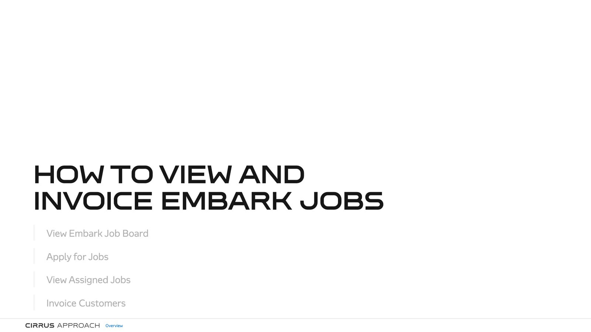

One Capture, Two Deliverables
A screen recording becomes an LMS lesson and a narrated video — both carrying the same AI voice track, built from one source.

The Problem
Two audiences, one procedure
A software procedure needs to reach people two different ways. Some need a tracked lesson in the LMS with completion recorded against their name. Others just want to watch ninety seconds and get on with the job.
Built separately, those two things drift. The video gets re-recorded, the wording diverges, the voice changes, and six months later nobody knows which one is current. I wanted a single source where both outputs are generated, not authored.
The Pipeline
Capture. The subject matter expert records the procedure once in Scribe — one screenshot per click, with the step text they actually used.
Shape. A pull script brings the captures and raw step text down locally. Working with Claude, I group the raw clicks into teaching steps, write the narration against them, and box the control the cursor is about to hit so the learner's eye lands in the right place.
Voice. ElevenLabs cuts the narration line by line against a cached manifest — only changed lines are re-synthesised, so a wording fix costs one line rather than a whole re-record.
Build. One command assembles the interactive lesson and packages it as SCORM 1.2. A second reads a timeline file and renders the video, cueing the same audio files against the same screens.
What I delivered
- SCORM 1.2 lesson
- 1:51 1080p video
- One shared voice track
By the numbers
- 12 captured steps
- 12 narration lines
- 24 recorded takes
- 4 logged corrections
One Voice, Both Formats
The video is not a screen recording of the lesson. Both formats read from the same narration files and the same timeline — cue times measured from the real audio rather than guessed, so a line that gets rewritten shifts the video's timing automatically on the next build.
That is the part that makes it maintainable. The two deliverables cannot drift apart, because neither one is hand-assembled.
Keeping It Honest
The gate that matters
Procedural content has to publish exactly as the expert wrote it. A reworded step in a checklist is a defect, not an editorial improvement.
So every wording change is logged with its reason and approval state, and a verification gate traces every published word back to the original capture or to an approved edit. This lesson carries four logged corrections and ships at zero unexplained deviations. Without that gate, an AI-assisted pipeline is exactly as trustworthy as whatever it happened to generate that day.
Why It Matters
The first lesson through this pipeline took a while. The next ones take an afternoon. Six walkthroughs now run on it, covering federal licensing, customs and flight-planning systems, and the method is the deliverable as much as any individual course is.
Screens from the course itself are not shown here: the capture is of an internal, authenticated system and contains colleagues’ and customers’ details. The pipeline, not the client’s data, is the thing worth showing.